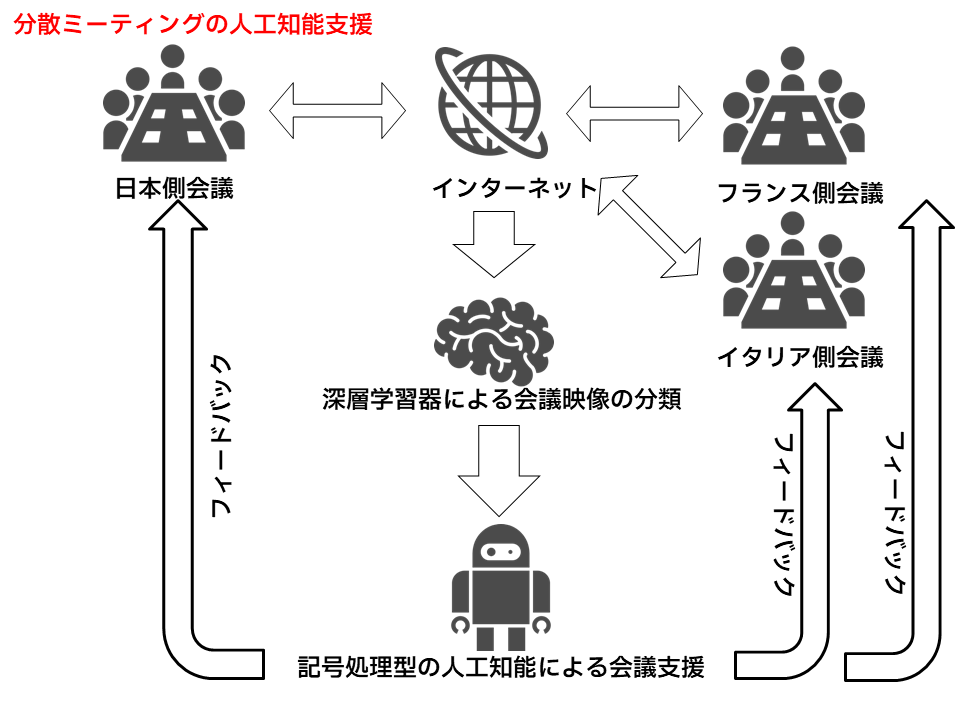
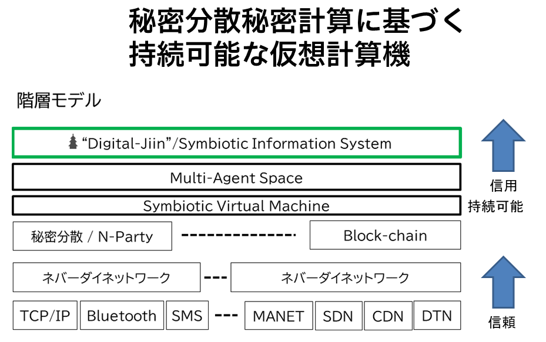

研究内容
千葉工業大学 情報変革科学部 認知情報科学科 藤田研究室では、主に以下のような研究を行ってます。
(※がついている用語をクリックすると、その用語の説明ページが開きます。)
１）人工知能
今日では、深層学習* の研究開発が実用になりつつあります。一方で、その動作については解析が十分ではなく、システムがなぜそのような動作をするのかが分かりません。 藤田研究室では、深層学習の成果を使って、その上に記号処理のシステムを構築し、人の評価を経て、コミュニケーション可能な人工知能システムの研究を行っています。
応用システムとして、フランス・コンピエーニュ工科大学*と、 遠隔地間で実施されるブレインストーミング*中の動画像から、 人の行動を認識して、コミュニケーションを円滑に進めるための情報提供システムの研究開発、移動ロボットへの自然言語による動作指示実現などを研究開発しています。
 フランスのコンピエーニュ工科大学/ソルボンヌ大学との |
 人工知能に120万のデータを学習させ、人の視線を推定 |
|  日仏伊の共同研究テーマ「分散ミーディングの人工知能支援」 |
２）分散処理
人工知能システムなど、複雑で大規模な処理を実行するために、分散処理* 技術の研究開発を行なっています、また、多数の装置が関係するネットワークは必然的に分散処理となります。
今日の情報処理システムは、100年規模で動作を続けることを想定していません。しかし、我々の情報や知識、遺産はデジタル化されて蓄積されています。 また、データ保存のみならず、処理を継続して実施することが必要です。そこで、藤田研究室では、知的エージェントが複数動作する分散処理システムのための基盤技術の研究開発をおこなっています。
３）ネットワーク
どんなに暗号技術が進歩しても、これを解読するための技術が開発されるために、計算の難しさに依存した「計算量的安全性」ではなく、「情報理論的安全性」を用いることが必要です。
そこで、藤田研究室では、情報理論的安全性をもつ暗号方式として、秘密分散*・秘密計算* の枠組みのなかの、軽量Nパーティ秘匿関数計算を使って、データを安全に複数のサーバへ保管し、秘密を保ったまま、計算処理が可能な方式とその応用システムを研究開発しています。
|  秘密分散・秘密計算に基づく藤田研究室が提案する仮想計算機 |
作成者：24G2019 岩本大介